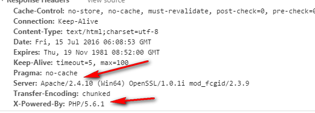
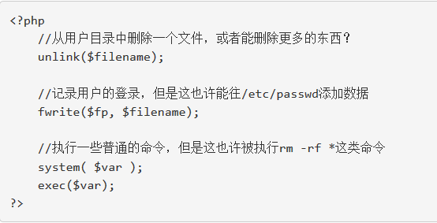

搭建Git服务器
PHP安全-隐藏PHP
一些简单的方法可以帮助隐藏PHP，这样做可以提供攻击者发现系统弱点的难度。在php.ini文件里设置
expose_php = off
可以减少他们获得有用信息的几率。
expose_php = On 的时候可以看到php的版本：
expose_php = Off后，看不到php的版本

另外一个策略就是让web服务器用PHP解析不同扩展名。无论是通过.htaccess文件还是 Apache的配置文件，都可以设置能误导攻击者的文件扩展名：
例子：把PHP隐藏为另外一种语言
AddType application/x-httpd-php .asp .py .pl
还可以设置httpd.conf来隐藏apache信息
ServerTokens Prod
ServerSignature Off
这样设置后在响应头也是看不了apache的相关信息了。
PHP安全-用户提交的数据
用户提交的数据都是不可信的
很多PHP程序所存在的重大弱点并不是PHP语言本身的问题，而是编程者的安全意识不高导致的。因此，必须时刻注意每一段代码可能存在的问题，去发现非正确数据提交时可能造成的影响。
例子1 危险的变量用法
所以，我们必须时常留意自己写出来的代码，以确保每一个从客户端提交的变量都经过适当的检查，然后问自己以下一些问题：
1. 此脚本是否只能影响所预期的文件？
2. 非正常的数据被提交后能否产生作用？
3. 此脚本能用于计划外的用途吗？
4. 此脚本能否和其他脚本结合起来做坏事？